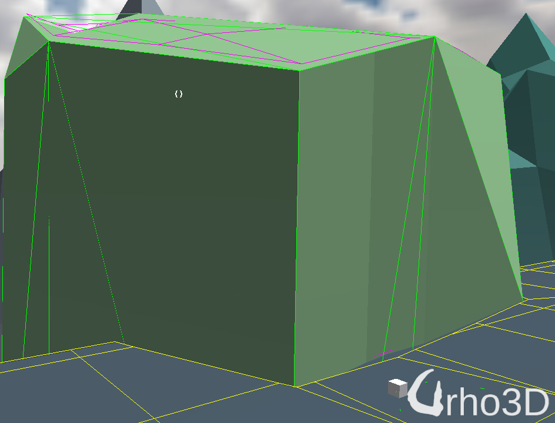
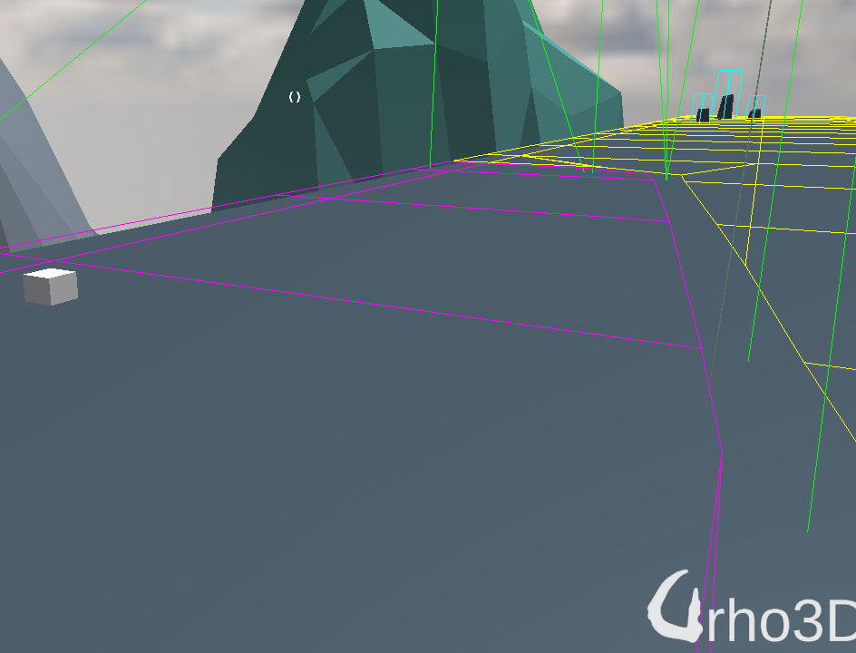

Just for show.
I finally got around to using NavigationMesh on the project that I’m working on, and for the most part, functionalities that I need are there. However, I added a few enhancements.
First enhancement was adding a ConvexPruneObject class which as the name suggests prunes nav tiles as untraversable, as shown by the magenta tiles shown in fig 1 and fig 2. This came about after observing that creating a huge Obstacles lacked features that I needed. Querying for nearest path inside an obstacle (position of the white box shown in fig 2) returned a tile inside the obstacle. By pruning the unwanted tiles, the nearest position is acquired outside the convex object.
Second enhancement was loading nav tiles from file and load them in a single contiguous memory instead of building the nav mesh at load time. In my simple scene, it takes about 1.4 seconds to build the navmesh and it takes less than 1 msec. to load tiles from file and rebuild it.
Third simple enhancement - for navmesh to ignore nodes with “ignore” tag used for thing as trigger boxes, small debris, and far off mountains that’ll never get traversed.
fig 1.

fig 2.
